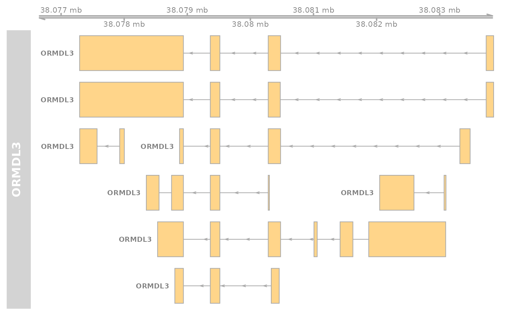
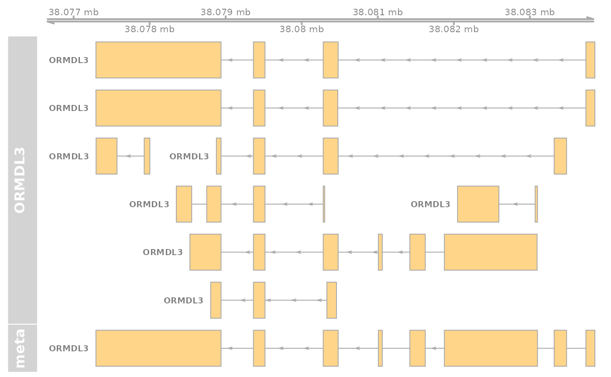

R/txmodels.R
txmodels.Rduse Gviz to render transcript models via GeneRegionTrack, but keep lightweight through requireNamespace and suggestion for installation
txmodels(sym, gr, edb = "EnsDb.Hsapiens.v75", plot.it = FALSE, radius = 0, ...)
| sym | a gene symbol to be looked up in biovizBase::genesymbol table |
|---|---|
| gr | a GRanges instance, anticipated to be length 1 |
| edb | a character(1) name of an EnsDb annotation package |
| plot.it | a logical(1) specifying whether Gviz::plotTracks should be run |
| radius | a numeric(1) specifying number to add to IRanges instance used to subset gene models from ensembldb::exonsBy output |
| ... | passed to Gviz::GeneRegionTrack |
an instance of Gviz::GeneRegionTrack, invisibly returned
t0 = txmodels('ORMDL3', plot.it=TRUE, name='ORMDL3')#>#>#>#>#>#>#>#> #> #> #> #>#>#> #>#> #> #>t1 = txmodels('ORMDL3', plot.it=FALSE, name='meta', collapseTranscripts='meta') requireNamespace('Gviz') Gviz::plotTracks(list(Gviz::GenomeAxisTrack(), t0, t1), showId=TRUE)